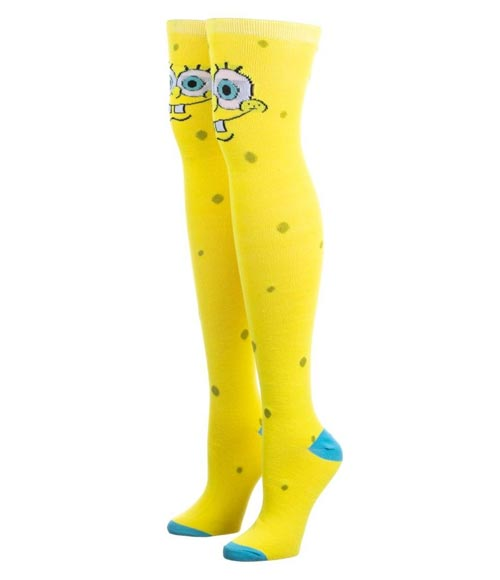

Spongebob is really popular so obviously people will try to sell unlicensed merchandise of him. Here are some of the most popular types of merchandise that people sell. (This page is deep in the water.)

From eStarland by unknown
From Walmart by unknown
Plushies are very common when it comes to Spongebob and aprtkic! However, their has never been an official Spongebob plush so they're all bootlegs. This leads to some of the plushies being bad quality and some being good quality.
From Sunstaches by unknown
From Walmart by unknown
From eStarland by unknown
Many people have attempted to make spongebob apart of modern clothing or clothing in general. However, as these images show above, the quality in these things are normally really bad or questionable.

From Zavvi USA by unknown

From NickALive! by unknown

From eBay by unknown
Many toys/action figures/ figurines exist of spongebob. Many of them try to be special in some way but it normally doesn't work out and it just ends up looking weird. Some of them are actually well made and serve as pretty good replacements for legitimate spongebob toys.

From Amazon.com by unknown

From Andamiro USA by unknown
Trading cards/playing cards normally are just card games that have nothing to do with Spongebob originally but now have hime plastered everywhere or are just cheap looking cards that only you have so you can't even trade them.

From Spongebob SquarePants Shop by unknown

From Spongebob SquarePants Shop by unknown
Pillows and Towels have been made with spongebobs face all over them all for the sake of money. Like a lot of these things that are on here.